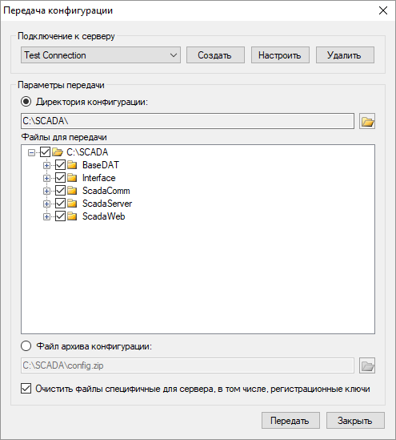

Служба Агент устанавливается на удалённый сервер и обеспечивает обмен конфигурациями между сервером и рабочей станцией инженера, на которой происходит работа над проектом SCADA-системы.
Агент работает на операционных системах Windows и Linux. Агент не имеет пользовательского интерфейса и работает как служба Windows или как демон на Linux. Пошаговая инструкия по установке Агента находится в архиве его дистрибутива.
Для взаимодейтвия с Агентом необходима программа Администратор версии не ниже 5.1.0.0. Администратор устанавливается в составе Rapid SCADA.
Исходные данные: имеется удалённый сервер с установленной Rapid SCADA и Агентом, а также отдельная рабочая станция инженера, с которой осуществляются описанные в статье действия.
Рекомендуется хранить конфигурации (проекты) Rapid SCADA на отдельном файловом сервере, который резервируется, либо использовать системы контроля версий типа Git. Чтобы передать необходимую для работы конфигурацию на производственный сервер, отредактируйте её на рабочей станции и используйте приложение Администратор для передачи.
Однако, возможна ситуация, когда конфигурация Rapid SCADA хранится только на удалённом сервере. В этом случае, чтобы отредактировать конфигурацию, необходимо сначала её скачать на рабочую станцию. Предварительно откройте в Администраторе файл базы конфигурации в формате SDF, в который будет импортирована редактируемая конфигурация. Выберите пункт меню Удалённый сервер > Скачать конфигурацию..., откроется форма, показанная на рисунке ниже.
Для сценария с последующим редактированием конфигурации необходимо выбрать параметры скачивания именно так, как показано на рисунке. После успешного скачивания откроется форма импорта конфигурации из формата DAT в формат SDF. Дело в том, что рабочая копия конфигурации на сервере хранится в специализированном формате DAT, а для редактирования используется формат SDF. После успешного выполнения импорта редактируйте базу конфигурации Rapid SCADA и конфигурацию всех приложений на рабочей станции.
После того, как необходимое редактирование конфигурации завершено, передайте её обратно на удалённый сервер. Для этого выберите пункт меню Удалённый сервер > Передать конфигурацию..., откроется следующая форма:

Сначала отметьте корневой узел дерева, чтобы выбрать все файлы конфигурации для передачи, а затем раскройте каждый узел дерева, чтобы проверить и исключить из выбора посторонние файлы, если они присутствуют. После успешной передачи конфигурации Агент перезапустит службы Сервера и Коммуникатора на удалённом сервере, чтобы изменения вступили в силу. Обязательно проверьте работоспособность сервера после передачи конфигурации.